Neste ciclo foram finalizadas 3 histórias épicas em média fidelidade, com backend (FastAPI) e frontend (Vue 3 + Quasar) integrados. O foco foi permitir que produtores culturais cadastrem eventos, que moderadores aprovem ou rejeitem submissões antes da publicação, e que o público consulte a agenda aprovada por meio de um chatbot simples no feed.
/cadastro com formulário manual e upload opcional de flyer.POST /events para cadastro manual.POST /events/flyer/preview e POST /events/flyer/submit.pendente e não aparecem no feed público./moderacao com autenticação por chave de moderador.GET /moderacao/pendentes, PATCH .../aprovar e PATCH .../rejeitar.POST /chat com busca em eventos aprovados./evento/....backend/main.py, backend/chat/CadastroProdutorPage.vue, ModeracaoPage.vue, ChatbotPanel.vueuseModerationApi.js, useChatbot.jshttp://localhost:9300/http://localhost:9300/cadastrohttp://localhost:9300/moderacaohttp://127.0.0.1:8010/docshttp://127.0.0.1:8010/eventshttps://github.com/marinaghoffmann/OndeAconteceRecifeObs.: links locais exigem backend e frontend em execução na máquina de desenvolvimento.
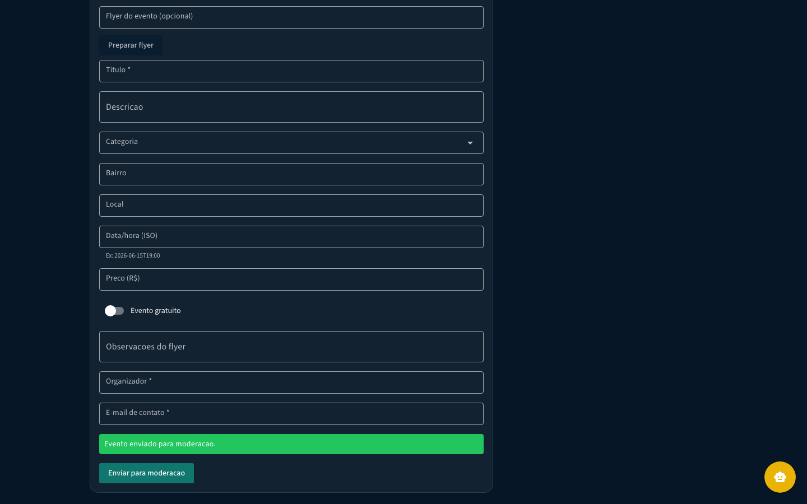
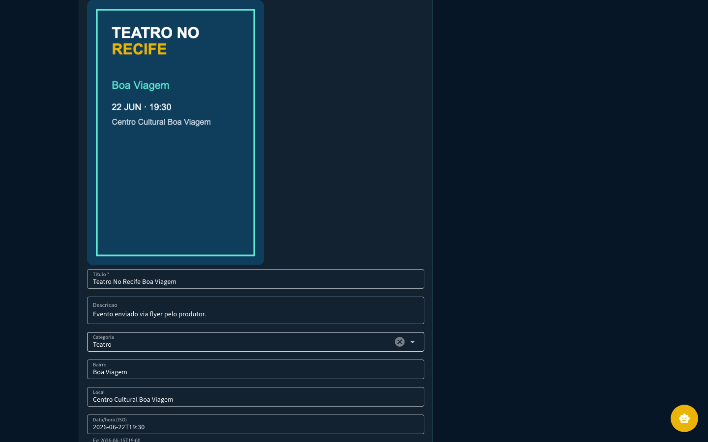
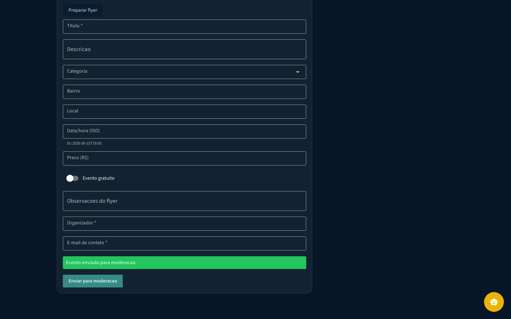
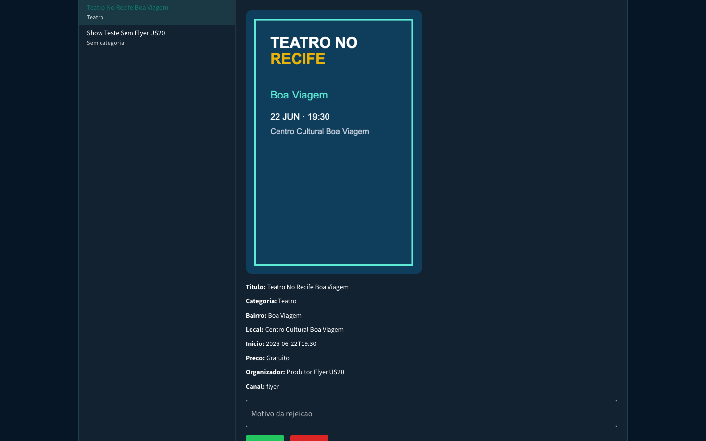
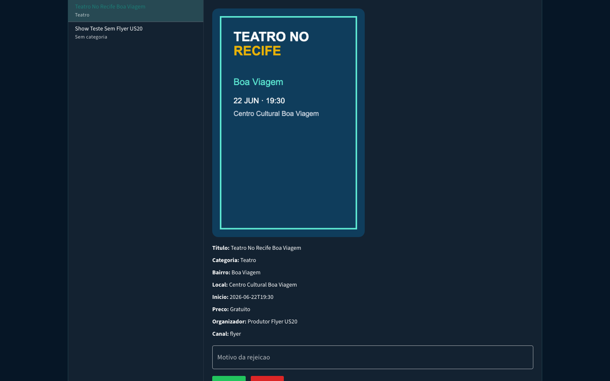
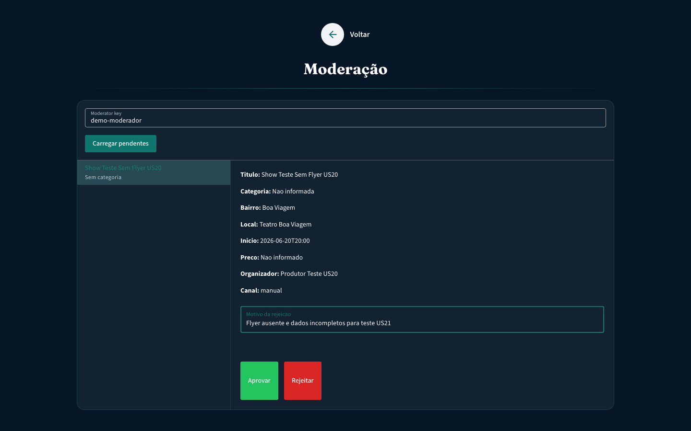
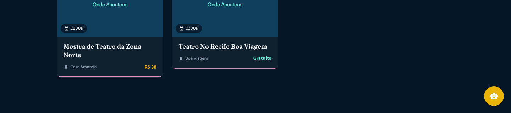
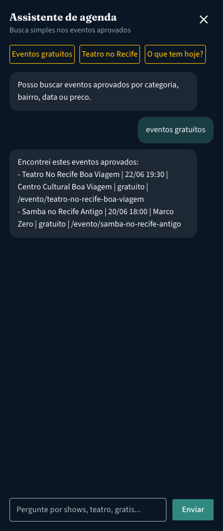
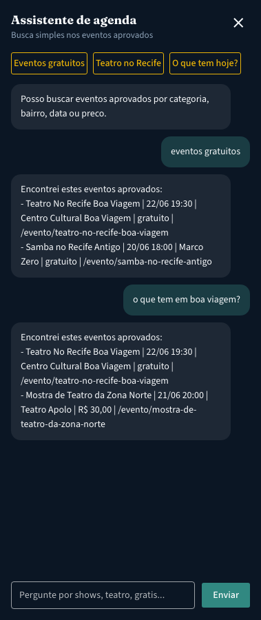
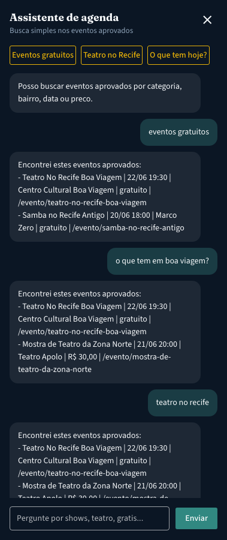
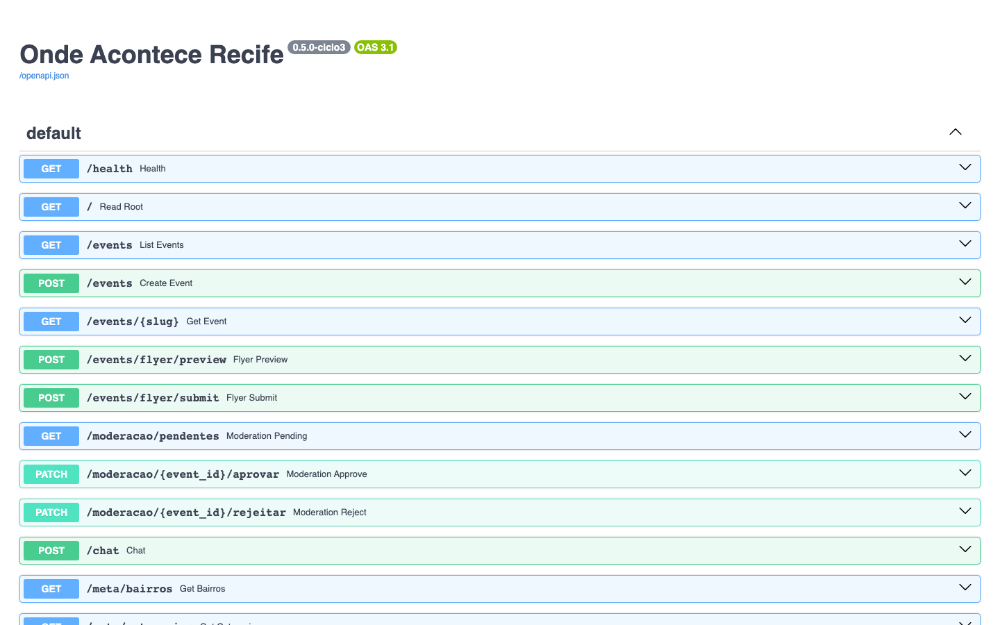